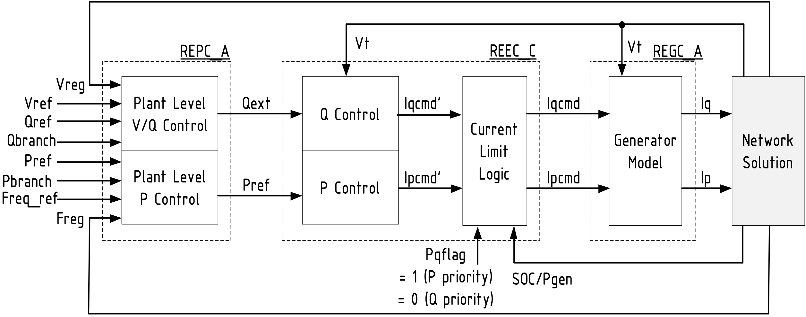

Industrial (Generic) Renewable Models
Connection with the Inverter Metamodel
Generic Renewable Models for PV solar or battery devices used in industrial tools, such as PSS/E or PowerWorld, does not necessary resemble the proposed structure of our proposed metamodel.
In general terms, a generic renewable model (for PV plant or battery) is typically a Grid Following inverter that uses a Renewable Energy Plant Controller (REPC), a Renewable Energy Electrical Controller (REEC) and a Renewable Energy Generic Converter (REGC) model. The following figure is useful to understand the general structure of such models:
In comparison to the proposed inverter metamodel it is clear that the REPC resembles the Outer Control. However, the REEC has a purpose of both Outer Control and Inner Control and the REGC has a similar purpose of the Converter and Filter in the proposed structure. For such purpose, it was necessary to split the REEC and part of its model was included in both Outer Control and Inner Control.
Example of implementation of generic models
The following includes examples of the implementation of the proposed model in the inverter metamodel.
Active Renewable Outer Control
The following example join the active power controllers from REPCA and REECB as ActiveRenewableControllerAB in PowerSimulationsDynamics.jl
⠀
An important thing to consider with the industrial models, is that the change of Flags can significantly vary the model and purpose of the controller.
Reactive Renewable Outer Control
Similar to the active controller, the following figure presents the reactive controller part from REPCA and REECB as ReactiveRenewableControllerAB in PowerSimulationsDynamics.jl
⠀
Inner Controller
Finally, the remaining part from REECB was included RECurrentControllerB
⠀
The REGCAmodel was directly included in a Converter Block, and the filter can be bypassed using an RLFilter block with rf = lf = 0.
Current availability of model flags in PSID
Active Controller
For the active controller, both Freq_Flag = 0 (ignoring frequency regulation) and Freq_Flag = 1 (considering frequency regulation) are available.
Reactive Controller
The following table describes the current available combination of flags in PSID:
REF_Flag | PF_Flag | V_Flag | Q_Flag |
|---|---|---|---|
| 0 | 0 | 0 | 0 |
| 0 | 0 | 1 | 0 |
| 1 | 0 | 1 | 1 |
| 1 | 0 | 0 | 0 |
Any combination outside of these cases may not converge to a feasible operating point. Check the following CAISO report for the description and compliance of each flag combination.